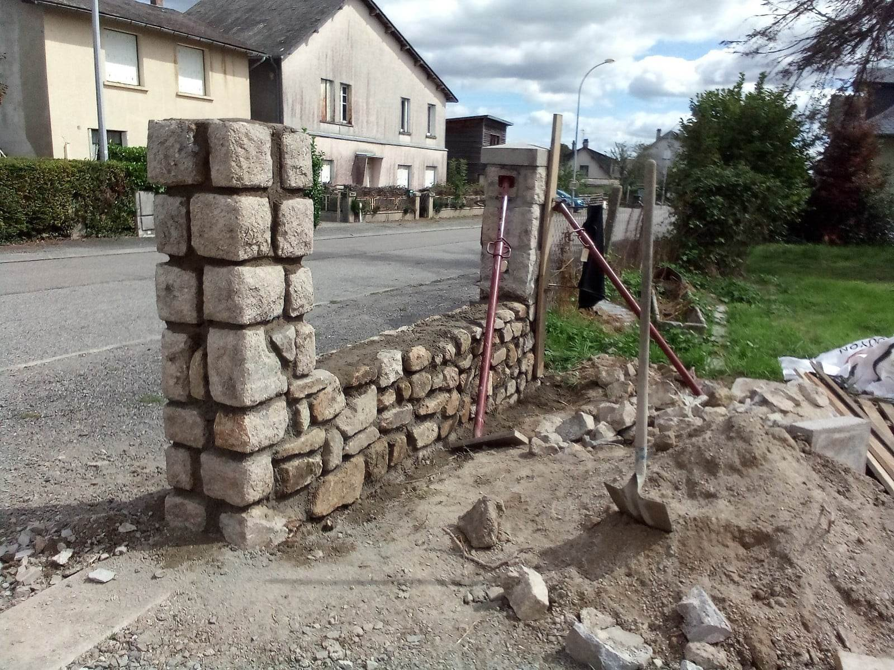

01
Construction et reconstruction de murs en pierre
Découvrez l'art ancestral de la maçonnerie, où chaque pierre est soigneusement choisie et chaque mur est une œuvre d'art. Notre expertise en reconstruction et construction de murs en pierre est au cœur de notre métier. Que vous souhaitiez restaurer un mur ancien avec un charme intemporel ou créer un nouveau mur en pierre robuste, nous sommes là pour donner vie à vos projets.
Voir les réalisations